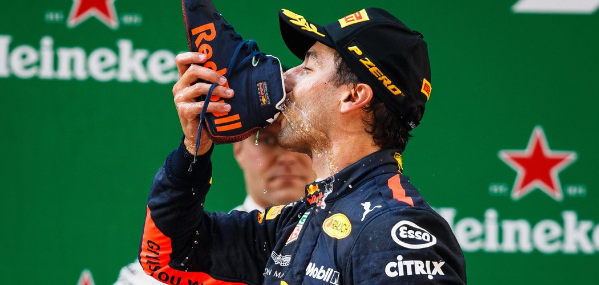

Daniel Ricciardo and Red Bull Racing win the Chinese Grand Prix.
From a retirement to a victory in China just 1 week later, Daniel Ricciardo has indeed displayed amazing skill this week. After the Free ractice Session 3 when the Australian parked his car up because of an engine failure and doubtful to even drive in the qualifying session 2 hours later, the man has still ended up taking the win thanks to his amazing driving and his team's alertness on the strategy changes.
It was a brilliant day for Scuderia Ferrari, as they had a repeat of the 1-2 qualification just like in Bahrain. However this was short lived because come sunday, there was a horror race waiting. Just like Bahrain, Bottas overtook Kimi to secure a second place for the rest of the race. Come the first pit stop, Mercedes called its cars in after a lap of Red Bull's pit stop but the ferrari's kept on track. 2 laps later when Vettel came into the ppits, Bottas made his undercut work putting himself and Mercedes in the lead.
A few lapps later a Toro Rosso collision caused the safety car to be called out onto the track. Red Bull saw this as an opprtunity to change tyres and here is the crucial game changer, Mercedes and Ferrari did not pit. As soon as the race restart went underway the 2 Red Bulls of Ricciardo and Max begun a spree of overtaking. Daniel Ricciardo, being the amazing driver he is, overtook the Mercedes of Hamilton, Ferrari of Vettel and Mercedes of Bottas to secure his Victory, while Max Verstappen ruined his own race by being over aggressive, spinning himslef and Vettel who dropped from 2nd into 8th.
Vettel still remains at 1st place in the overall standings but will he be able to hold it after the Azerbaijan Grand Prix on Sunday?
The podium:
1. Daniel Ricciardo, Red Bull Racing (WINNER)
2. Valtteri Bottas, Mercedes AMG
3. Kimi Räikkönen, Scuderia Ferrari
Sunday, 15th April, 2018


Sebastian Vettel Displays His Hunger for Victory as Scuderia Ferrari enjoys a Bitter-Sweet Bahrain Grand Prix.
The Night race in the desert as the Bahrain Grand Prix is rightly called, did not fail to entertain the masses and kept the viewers gripped right upto its finish.
Scuderia Ferrari finished the Saturday qualifying session with a 1-2 finish, pole position going to Sebastian Vettel and the 2nd position to Kimi Räikkönen. Come Sunday, as soon as the 5 red lights went off, Mercedes's Valtteri Bottas snatched the 2nd place from Kimi who did not have as good of a start as his teammate. In the first few laps, disaster struck Red Bull Racing as Daniel Ricciardo's car suffered a loss of power and forced him to retire from the race. Similarly the next lap, Red Bull's Max Verstappen, suffered a puncture because of a collision with Mercedes's Lewis Hamilton and had to retire from the race.
During the ending stages drama picked upp because Kimi Räikkönen came into the pits for a change of tyres. One of the rear tyres was not put on properly but a green signal was given and Kimi accelerated away. In doing so, the car hit a mechanic and crushed the latter's leg. Immediately Kimi's pit crew told him to stop the car and as a result a pit crew mistake made the prancing horse lose points on the board and lose a position to Mercedes in the constructor standings.
Sebastian Vettel now the sole driver, continued driving on tyres that had worn out 10 laps ago. With loss of grip and Bottas gaining time per lap and coming at him like a hungry lion, Vettel was not fazed and continued driving. Last lap, Bottas came side by side but could not make the most of it and Vettel drove home for the win making it 2 in a row for himself and Scuderia Ferrari.
The podium:
1. Sebastian Vettel, Scuderia Ferrari(WINNER)
2. Valtteri Bottas, Mercedes AMG
3. Lewis Hamilton, Mercedes AMG
Sunday, 8th April, 2018


Sebastian Vettel and Scuderia ferrari pull the rabbit out of the hat with a win at the Australian Grand Prix.
The wait for the new season ends as we begin the 2018 calendar with very familiar Albert park Circuit in Australia. Everyone waiting to see whether this season will bring a change in results or will it be a domination by the silver arrows yet again.
The saturday qualification session made fans lose hope as Lewis Hamilton of Mercedes set in a lap time that broke the record and put him on the pole position. But the next day something so amazing happpened that gave everyone hope that this season actually could have a lot of potential.
For the first few laps Hamilton lead the race and maintained a good gap from Vettel. Come the pit stop Hamilton came out behind but thats where Vettel made a masterful move. A safety car was declared because of Romain Grosjean's Haas being parked in a dangerous position. As a result Vettel in fact gained a little time in the pits and came out of ahead of Hamilton. The crowd erupted as the race had now become much more interesting and alongwith it brought in Hamilton's frustration.
Hamilton tried to push hard but locked up and took a hit on the tyres. By the end Hamilton had to dropp back and Vettel took home the Chequered Flag easily. The first race of the season brought with it drama, passion and a fight we have not seen in a while. Will Mercedes recover from this hit? Will the rancing Horse dominate the remainder of the season? Where is Christian Horner's Red Bull going to be in this war? We shall see.
The podium:
1. Sebastian Vettel, Scuderia Ferrari(WINNER)
2. Lewis Hamilton, Mercedes AMG
3. Kimi Räikkönen, Scuderia Ferrari
Sunday, 25th March, 2018